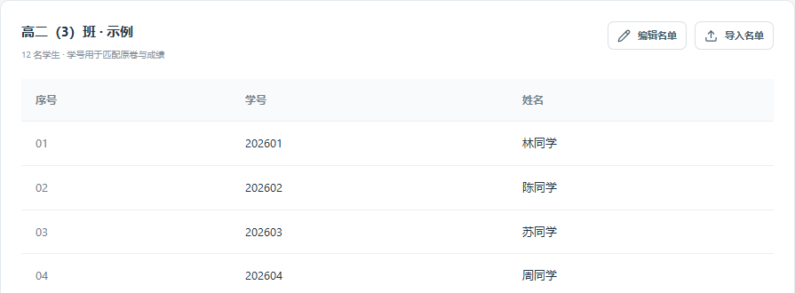
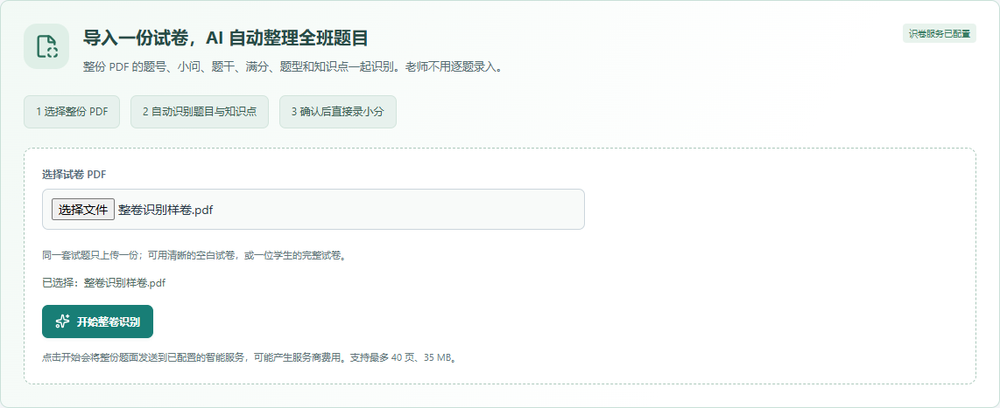
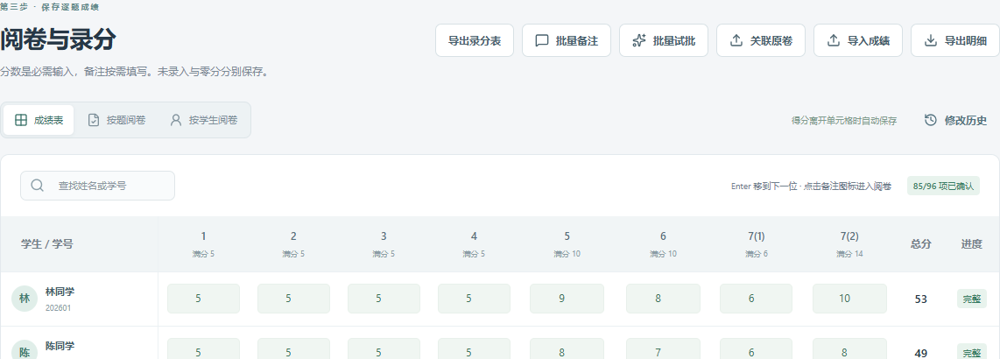
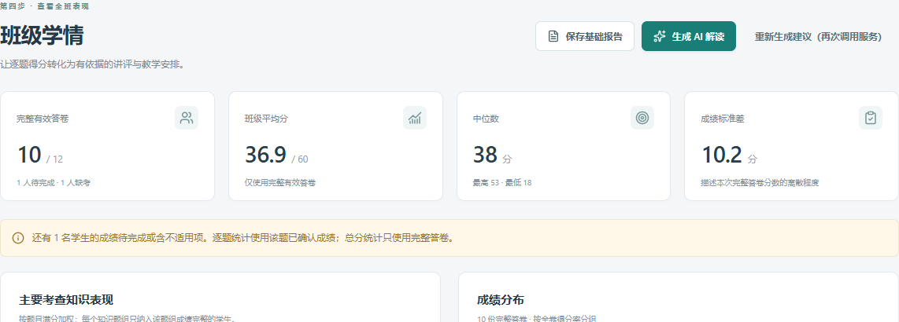

不会 AI，怎样开始自动识卷？
不需要学 AI。首次请信息老师协助连接服务；此后选择 PDF，点“开始整卷识别”即可。没有连接信息时可先体验示例；自动识卷需要联网和可用服务。
教师掌握评分，逐点证据支持教学。
先在试卷准备识别题目，随后进入 AI 阅卷与复核。可上传参考答案及评分步骤，再点自动整理评分标准。核对每题多个评分点、技能和给分规则，同一份标准全班共用。
每位学生一份 PDF，文件名用学号便于自动匹配。点击自动定位并预批，系统逐题读取实际作答。没有定位到、续页遗漏或页面旋转时，可以调整区域并重批。
点击看原卷并复核，确认区域完整，再展开建议。可修改得分、表现与评语；分数和诊断分别确认。已有教师分数默认保留；取消只处理尚无最终分数，可让 AI 为已批答卷补充评语。
正式成绩只使用已确认小分，知识分析只使用已确认的逐点表现。改分、改标准或重传答卷后，旧解释暂时排除，重新复核即可恢复。只想人工录分也可以继续使用。
日常使用的中心仍是教师确认的题目、分数和备注。连接服务可以请人协助，是否采用建议由教师决定。
一份试卷自动整理，全班只录小分。
学生名单包含学号、姓名。同一套题面只需一份清晰、完整的 PDF，优先用空白试卷；也可用一位学生的完整试卷。若纸卷已批好，再准备每位学生的逐题成绩。
自动识别需要连接支持图片的智能服务。可请学校信息老师协助填好一次；以后教师只需选试卷，不需要了解 AI 原理。设置本身不收费，运行识别可能产生服务商费用。
① 建班级和考试。② 导入 PDF，点击“开始整卷识别”，核对后确认。③ 全班录分表自动生成，填每题小分，错因可留空。④ 查看个人与班级学情，保存报告。
首页点击“体验示例考试”，用标有“示例”的虚构资料练习录分和看报告。真实考试请另建班级；自动识别请连接服务后用自己的样卷验证。
名单先核对一遍，以后同一个班可以反复使用。
点击左侧“班级与学生”→“新建班级”，填写班级名称和年级。在下方逐行填写学号、姓名，点击“保存班级”。
已有班级可点击“导入名单”。先下载模板，把学号、姓名填进去；选择文件后核对预览，再确认导入。学号应在 Excel 中设为文本，保留 001 这样的前导零。
核对人数后点击“为班级创建考试”，填写考试名称和日期，并确认选择的是正确班级。创建完成会进入“试卷准备”。

题目、题型、分值和知识点一起整理，不用逐题填。
在“试卷准备”上方点击“选择试卷 PDF”。如提示未连接，点“连接智能识卷服务”完成首次设置后返回。支持整份 PDF（最多 40 页、35 MB），也支持清晰题面图片。
选择题面页，每两页一批整理题号、满分、题型和知识点，无需转写完整公式。开始后可以离开，稍后查看；失败可仅重试未完成页面。
完成后核对题数、分值和知识点。提示不一定覆盖所有识别错误；可对照原页。无误后确认并生成录分表，有内容的主要知识点同时确认。
满分未知可先保存小分草稿，知识点不明不妨碍逐题统计。补全满分后到录分页批量核对并确认草稿。可用1-8=5批量补分值；漏题可补充，清单编辑会恢复草稿。

只填分数就可以；有必要时再写一句错误说明。
在“阅卷与录分”选择“成绩表”，找到学生和题号后输入得分。点击另一格会保存，按 Enter 会保存并移到下一位学生；看到“已保存到本机”后再退出。
点击“导入成绩”，下载模板并照着填写，选择文件后核对学生、题号和分数。空白不覆盖旧成绩，0 分会导入。替换已有成绩需要在预览中明确选择。也可以从 Excel 复制一块成绩，粘贴进成绩表。
点击“关联原卷”，选择每人一份 PDF，核对每个文件对应的学生，再保存附件。建议命名为“学号.pdf”。然后选择“按题阅卷”或“按学生阅卷”，看卷、打分，点击“保存”或“保存并下一份”。
例如写“求导正确，符号判断错误”，也可以选问题标签；不需要每题都写。多人有相同问题可用“批量备注”。录错分可直接修改；批量导入和备注可在“修改历史”中检查并撤销，后续改过的成绩会受到保护。

先看数据是否完整，再决定下一课重点讲什么。
进入“班级学情”，查看完整答卷、缺考和待完成人数。学生有未录入的小题时，总分暂不显示，也不计入全卷平均分；逐题统计仍使用那道题已经确认的分数。
逐题得分率 = 平均得分 ÷ 该题满分。例如均分 3 分、满分 5 分，得分率为 60%。主要知识点题组汇总相关题目的表现；已有备注可帮助判断具体问题，没有备注时先回看原卷。
进入“个人学情”，选择学生，查看逐题成绩和需要回看的题目。一次考试只能反映这次作答表现，不宜仅凭一次分数判断长期能力。
点击“保存基础报告”即可生成不需要联网的报告。打开报告后可修订说明、查看题号对应的依据、导出 PDF。已保存的报告在“报告归档”里。修改成绩后，应重新保存报告；旧报告保留当时的数据。

把反馈用到下一次教学。
查看最多三个优先讲评事项及其题目依据，点击名单核对具体学生。没有明确错因时先做短题诊断。
名单只是本次临时安排，教师可增减。同一学生可参加不同知识点的辅导，不作为永久分层。
使用校本短题、作业或已核对的练习，写明题目出处和独立完成的标准，无需学生端。
分别记录独立达标、仍需支持、未参加或延后检查。有提示才完成不等于独立达标，单次复测不证明长期掌握。
日常使用的中心仍是教师确认的题目、分数和备注。连接服务可以请人协助，是否采用建议由教师决定。
平时资料自动存在本机，重要考试结束后再留一份备份。
进入“设置与数据”，点击“导出完整备份”，保存得到的 .zhb 文件。它包含班级、试卷附件、成绩、修改历史和报告；建议另外复制到学校允许的存储位置。
在原电脑导出完整备份；在新电脑打开知衡，进入“设置与数据”→“选择备份恢复”。先看预览，确认是要迁移的资料后再恢复。只复制程序 EXE 不会带走考试资料。
恢复会替换当前工作区。界面要求输入“恢复备份”确认，执行时也会自动留下恢复前的备份。若仅想导出某次成绩，请在阅卷页选择“导出”，不必恢复整个工作区。
识卷服务连接一次；智能试批、备注归类、文字解读按需使用。
在试卷准备页点“连接智能识卷服务”，会展开设置。填写服务地址、访问密钥、模型名称；这些信息由服务提供方提供。可以复制“协助配置说明”请学校信息老师帮助。
保存后到试卷准备选题面页识别，核对题号、满分和知识点。设置保存仅表示信息已记录，实际识别成功才表示服务可用。
教师录分即可获得个人和班级分析。若要智能试批，先补齐参考答案、评分细则并关联学生原卷，从一道题、一个学生开始试用；学情页可以整理已写备注、生成文字解读。
试评分和备注归类先是建议，采用后才进入正式结果。人工改过的成绩会受到保护。学情分析使用最终小分和已采用备注，以及题目、知识点，不依赖未采用的 AI 试批过程。
日常使用的中心仍是教师确认的题目、分数和备注。连接服务可以请人协助，是否采用建议由教师决定。
遇到问题时，先按这里的方法检查。
不需要学 AI。首次请信息老师协助连接服务；此后选择 PDF，点“开始整卷识别”即可。没有连接信息时可先体验示例；自动识卷需要联网和可用服务。
需要每道计分题的成绩。总分无法判断在哪些题目失分，也不能可靠地推断知识点表现。请补录小题或整道题的分数，再进行分析。
只需上传一份完整题面来自动整理题目。确认后直接填入或导入全班逐题小分，错因按需填写。只有想在电脑上看作答或智能试批时，才需关联每位学生的原卷。
不需要。选择题面页后点击开始，会分批整理并保存。完成后核对题数、分值和知识点；未显示警告的题也可能有识别错误。
先检查该学生是否有空白、草稿、缺考或“不适用”的小题。只有所有计分题均为已确认成绩时才显示完整总分。别把未录入当作 0 分补齐。
整卷识别结果确认后，知识点会同时确认。请先录入对应题组的完整小分并检查有效人数。手工补充或旧版题目还需在试卷准备中核对主要知识点。
旧报告保留生成当时的数据，便于核对历史。请到班级或个人学情页重新保存报告，再导出新的版本。
用学号区分，建议文件名用“学号.pdf”。关联原卷时核对文件与学生的对应关系，不能只按姓名猜测。
直接修改该题并保存。批量操作可在“修改历史”查看和撤销；若成绩在这之后又被改动，系统会阻止直接撤销，请逐题核对。
它是访问智能服务的凭据，类似服务密码。只在设置页填写，不放进学生名单、备注或报告，也不要发送给学生。不会配置时可以请学校信息老师协助。